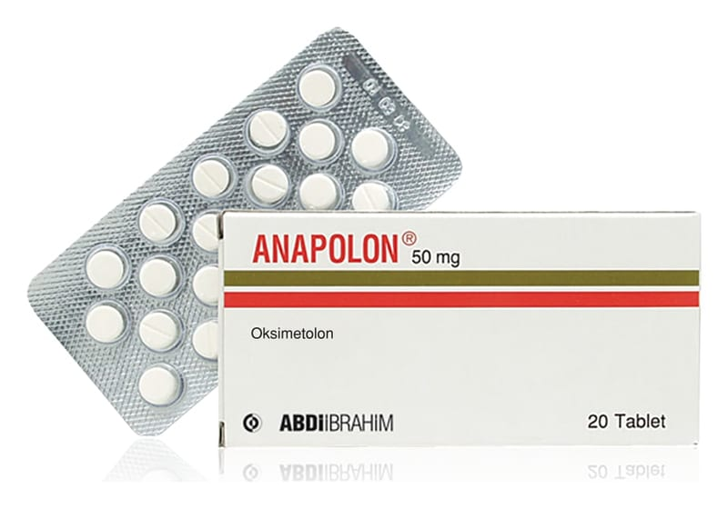

Anapolon 50 mg Tablet, 30 Adet

Ne için kullanılır
KT · Bölüm 1ANAPOLON’un içinde bulunan oksimetolon ağızdan alınan güçlü bir androjenik maddedir. Vücuttaki başlıca erkeklik hormonu olan testosteron’un sentetik bir türevi olan oksimetolon, kemik iliği yetersizliğine bağlı anemisi (kansızlığı) olan hastalarda eritropoietin adlı hormonun üretimini ve idrar yolu ile atılımını artırır. Alyuvar yapımı yetersizliğine bağlı anemilerde ise, eritropoezi (alyuvar yapımını) sıklıkla uyarır. ANAPOLON anabolik steroidler sınıfında yer alır ve testosteronun (erkeklik hormonu) sentetik bir türevidir. ANAPOLON, vücutta alyuvar yapımındaki azalmaya bağlı anemilerin (kansızlık), sonradan oluşan ya da doğuştan aplastik anemilerin (genelde nedeni bilinmeyen ve kemik iliği yetersizliği ile karakterize anemi), miyelofibrozis (nedeni bilinmeyen kötücül bir kemik iliği hastalığı) ve miyelotoksik ilaçlara (kemik iliği fonksiyonlarını bozucu ilaçlar) bağlı olarak oluşan hipoplastik anemilerin (kemik iliği yetersizliğinden kaynaklanan ağır anemiler) tedavisinde kullanılır.